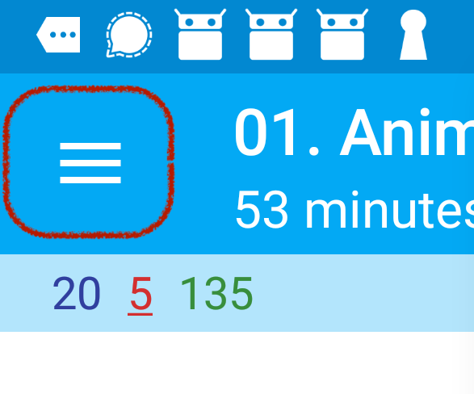
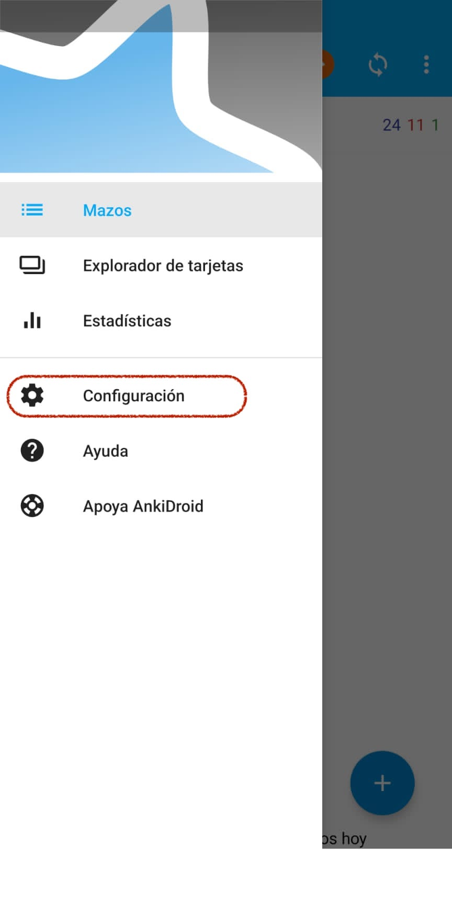
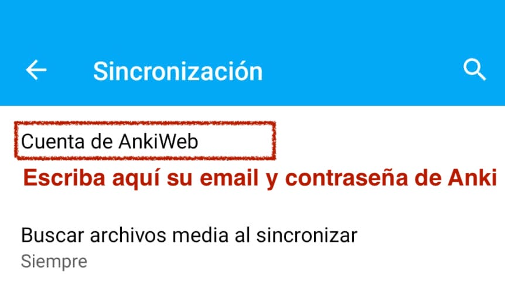
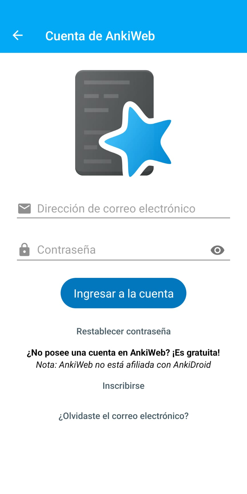

2 Instrucciones para usar el repositorio en su tablet o celular
Para seguir estos pasos debe haber completado las instrucciones para crear una cuenta en Anki y bajar el repositorio a su computador.
2.3 Descargue la aplicación.
Descargue la aplicación en su tablet o celular. Tenga en cuenta que Anki es gratis en Google play, pero es de pago en el App Store.
2.4 Vincular su cuenta.
Entre a la aplicación de Anki y de clic en las tres líneas que se encuentran generalmente en la parte izquierda de la pantalla

2.5 Seleccionar estas tres líneas abrirá el menú que se observa a continuación.
Seleccione en donde dice configuración

2.7 Seleccione la opción “Cuenta de AnkiWeb.”
Ponga su email y contraseña.El mismo email y contraseña que usó para crear la cuenta en Anki

Nota: Puede ser también que deba ingresar su email y contraseña de Anki tan pronto abra la aplicación
